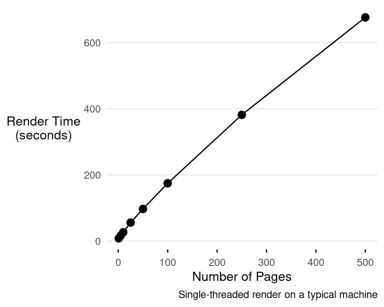

flowchart TD
A["Project directory<br/>(_quarto.yml, R/, data/, …)"]
B["render_in_isolation('page.qmd')"]
C["tempdir('/tmp/render-XXXX')"]
D["Symlink project resources<br/>into tempdir"]
E["Symlink target .qmd<br/>into tempdir"]
F["quarto::quarto_render('page.qmd')"]
G["_freeze/page/ produced<br/>in tempdir"]
H["Results copied back<br/>to project _freeze/ and _site/"]
I["tempdir deleted"]
J["Done"]
A --> B
B --> C
C --> D
C --> E
D --> F
E --> F
F --> G
G --> H
H --> I
I --> J
Large quarto projects and speed
Python
R
Quarto
Quarto has slowly become one of my daily tools as a data scientist. Pretty much any analytical task involving data analysis, I turn to Quarto instead of Jupyter notebooks or R Markdown. More than that, Quarto isn’t just for “notebook” analysis; it can also be used to create wiki-like websites with analytical content. Quarto is designed exactly for this kind of product, enabling reproducibility and integration with Python, R, JavaScript, and HTML/CSS.
Quarto has made my life much easier in a lot of ways, but because I use it so much, I also spend a lot of time fighting it, specifically around limitations in scalability and performance. This post is an in-the-weeds experience about those limitations and some of the strategies I’ve been using to work around them.
This isn’t an unknown problem. Others have discussed the same performance issues [1], [2], and the Quarto team is aware and seems to be planning some significant performance-related upgrades [3]. Crossing my fingers these issues become irrelevant soon.

Quarto for a large >100 page scientific website
I manage a project that involves creating and updating webpages on a Quarto website with close to 100 pages of analytical documents. “Document” here refers to a .qmd1 that programmatically (through R, Python, and/or JavaScript) analyzes data and generates outputs like graphs and figures that live alongside narrative text – a perfect use case for Quarto. Two types of events prompt site updates:
- Regular data refreshes (weekly, monthly) trigger targeted re-rendering of downstream pages.
- New scientific questions require new dedicated webpages for their associated analyses to live in.
Each page takes about 20 seconds to 1 minute to render. We use freeze combined with targets to so that updates to data dependencies trigger webpage re-renders with a dependency-driven manner (A). This greatly speeds up page-specific updates, but whole website wide renders (B) still takes about 1-3s / page making total render time around 10-20 minutes. This is a significant bottleneck in the workflow: render time now requires real consideration when planning updates.
This post is about speeding up part (A) using targets + parallel rendering of specific web pages.
Slowness with quarto render
Slowness stems from the fact that Quarto renders documents serially and can’t be parallelized, due to concurrency problems [1]. A few GitHub issues describe some bespoke solutions2, but none are generalizable enough. Specifically, they don’t work for me for two reasons: the solutions target standalone HTML documents rather than a full website, and I rely on includes [6] to keep my website DRY3, which brings its own complications for parallelization.
Why includes complicates parallel rendering
A .qmd document can be treated like a function: parameterized and reused as a shared component that other .qmd documents call into. For example, I might have a penguins.qmd that analyzes penguin body measurements, and a series of per-species documents that each include penguins.qmd, passing in a different species as a parameter.
This is a great way to follow DRY principles in an “analysis notebook” workflow: write the analysis once, reuse it across many pages. But it comes at a cost for parallelization. Rendering a .qmd produces intermediate files during the render process. When two documents that both include the same shared .qmd render at the same time, their intermediate state collides: each process overwrites the other’s files mid-render, and both renders error out.
One community workaround) symlinks the .qmd under a unique name, renders that, then cleans up:
ln -s template.qmd page_A.qmd
quarto render page_A.qmd -P counter:1 --output page_A.html
unlink page_A.qmdThough this works for standalone parameterized reports, it breaks in a Quarto website project because the output lands in a shared _site/ directory. It also doesn’t handle the project-level dependencies those renders need: _quarto.yml, .Rprofile, renv/, R/ helper functions, and shared data. The following render_in_isolation function tries to address these issues to allow parallel rendering for Quarto websites.
render_in_isolation()
The idea is: for each .qmd you want to render, create a fresh tempdir, symlink in the project resources it needs, render inside that sandbox, and copy the results back.
Here I show pairing with {targets} to run in parallel:
library(targets)
source("render_in_isolation.R")
list(
tar_target(
pages,
c("reports/page1.qmd", "reports/page2.qmd", "reports/page3.qmd")
),
tar_target(
rendered,
render_in_isolation(pages), # instead of quarto::render
pattern = map(pages)
)
)The full source is in render_in_isolation.R. Here are the key pieces.
The main logic
Code
render_in_isolation <- function(
qmd_path,
project_dir = ".",
symlinks = NULL,
keep_failed = FALSE,
output_dir = "_site",
...
) {
start <- Sys.time()
project_dir <- fs::path_abs(project_dir)
tempdir_path <- tempfile("render-", tmpdir = "/tmp")
fs::dir_create(tempdir_path)
render_ok <- FALSE
original_wd <- getwd()
on.exit(
{
setwd(original_wd)
if (fs::dir_exists(tempdir_path) && !(keep_failed && !render_ok)) {
fs::dir_delete(tempdir_path)
}
},
add = TRUE
)
links <- if (is.null(symlinks)) DEFAULT_SYMLINKS else symlinks
links <- c(links, list_root_templates(project_dir))
# Sibling "_*" files next to the target qmd (e.g. a shared template used
# via includes) also need to be symlinked in. A missing qmd_dir is reported
# as a normal render failure below rather than crashing here.
qmd_dir <- fs::path_dir(qmd_path)
if (qmd_dir != ".") {
qmd_dir_files <- tryCatch(
fs::dir_ls(fs::path(project_dir, qmd_dir), type = "file", all = FALSE),
error = function(e) character(0)
)
for (file_path in qmd_dir_files) {
file_name <- fs::path_file(file_path)
if (startsWith(file_name, "_")) {
links <- c(links, fs::path(qmd_dir, file_name))
}
}
}
# The render target itself may already be one of the underscore-prefixed
# templates symlinked above; dedupe so it's only linked once.
links <- unique(links)
links <- links[links != qmd_path]
for (link in links) {
symlink_if_exists(link, project_dir, tempdir_path)
}
setwd(tempdir_path)
result <- tryCatch(
{
target_src <- fs::path(project_dir, qmd_path)
if (!fs::file_exists(target_src)) {
cli::cli_abort("Target qmd does not exist: {.path {target_src}}")
}
target_dest <- fs::path(tempdir_path, qmd_path)
fs::dir_create(fs::path_dir(target_dest), recurse = TRUE)
if (fs::link_exists(target_dest)) {
fs::file_delete(target_dest)
}
fs::link_create(fs::path_abs(target_src), target_dest)
quarto::quarto_render(qmd_path, ...)
copy_freeze_back(qmd_path, tempdir_path, project_dir)
copy_output_back(qmd_path, tempdir_path, project_dir, output_dir)
list(error = NULL, success = TRUE)
},
error = function(e) list(error = conditionMessage(e), success = FALSE)
)
render_ok <- isTRUE(result$success)
list(
qmd = qmd_path,
success = result$success,
error = result$error,
tempdir = if (keep_failed && !result$success) tempdir_path else NULL,
duration_sec = as.numeric(difftime(Sys.time(), start, units = "secs"))
)
}Three principles drive the design:
Symlinking project resources
The function populates a tempdir with symbolic links to everything a Quarto render might need:
DEFAULT_SYMLINKS <- c(
"_quarto.yml",
"_brand.yml",
".Rprofile",
"R",
"DESCRIPTION",
"NAMESPACE",
"renv",
"renv.lock",
"brand",
"data",
"includes",
"img",
"figures",
"figure",
"styles.css",
"scripts",
"references.bib"
)
Note
This is a non-exhaustive list of resources that I needed for my own website - add more as needed
It also auto-detects any underscore-prefixed file at the project root (_metadata.yml, _page_template.qmd, etc.) and any sibling underscore-prefixed files sitting next to the target .qmd. This is the piece that actually solves the includes problem from earlier: when species-A.qmd and species-B.qmd both include the shared penguins.qmd, each gets its own symlinked copy of penguins.qmd in its own sandboxed tempdir, so their intermediate render state can never collide. Missing paths are silently skipped, and if the render target itself happens to be one of the auto-detected templates, it’s only linked once.
Freeze and output management
After quarto::quarto_render() completes, the function copies _freeze/<page>/ and the rendered HTML (from the tempdir’s _site/) back into the real project. This is what makes freeze: true work across parallel renders — each page’s freeze data arrives back to the right place without conflicts.
Error handling
The function returns a list with $success, $error, $tempdir, and $duration_sec. With keep_failed = TRUE, the tempdir is preserved for debugging and its path is returned in $tempdir. Temp directories are created in /tmp (not R’s session temp), so they survive the R process exiting.
Summary and other performance tips
freezehelps a lot, but it only covers computation. Quarto still spends a lot of time rendering (1-2s per page adds up when you have 100+ pages).- That said, sharing freeze artifacts via git (Quarto’s own suggestion) quickly becomes unwieldy – Once my
.git/folder grew to 2 gb, I decided to stop tracking_freezefiles. I recommend sharing them through some other mechanism. - Use CI/CD (e.g. GitHub Actions) to handle full site renders.
- Serving the
_sitedirectory directly and runningquarto render [PAGE]from the CLI is much faster thanquarto preview. This speeds up the development loop; it’s not relevant for production rendering.
# In your project directory
caddy file-server --listen :4210 --root _siteReferences
[1]
quarto-dev, “Parallel rendering feature request.” 2024. Available: https://github.com/orgs/quarto-dev/discussions/2749
[2]
D. Mackinlay, “Quarto #this-is-slow.” Available: https://danmackinlay.name/notebook/quarto#this-is-slow
[3]
Posit, “What’s next for quarto 2.” 2026. Available: https://opensource.posit.co/blog/2026-04-06_whats-next-quarto-2/
[4]
quarto-dev, “HPC parallel render bug.” 2024. Available: https://github.com/quarto-dev/quarto-cli/issues/5861
[5]
quarto-devs, “Parameterized parallel report conflicts.” 2024. Available: https://github.com/quarto-dev/quarto-cli/issues/4730
[6]
Quarto, “Includes.” Available: https://quarto.org/docs/authoring/includes.html
Footnotes
.qmdfiles are like Jupyter notebooks: code and its output live together alongside author-written narrative. The “md” part conveys that the filetype is markdown at heart, a simple, lightweight, human-readable document. The “q” stands for “Quarto,” which today spans a wide set of capabilities across supported languages (R, Python, Julia, Observable JS) and output formats.↩︎[4] and [5] describe concurrency issues, with some members suggesting workarounds, but with no official fix from Quarto yet.↩︎
The DRY (Don’t Repeat Yourself) principle is a core software development philosophy stating that “every piece of knowledge must have a single, unambiguous, authoritative representation within a system”.↩︎